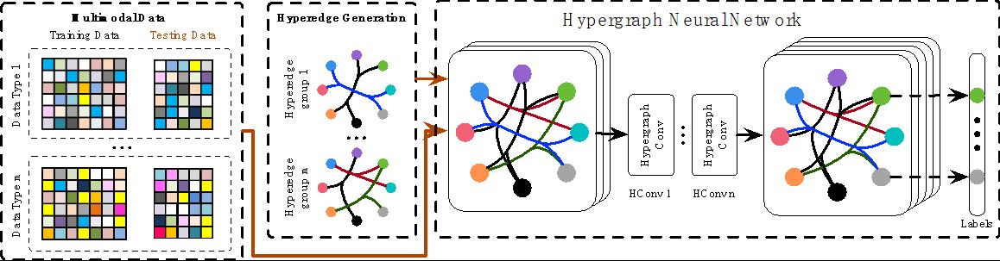

机器学习¶
数据复杂关联建模和表征在许多应用中起到重要作用，比如社交数据分析、分类任务、医疗数据分析等等。我们主要研究基于图和超图的学习、超图神经网络、多模态数据融合、度量学习等方法，并在视觉分类、软件缺陷预测、社交媒体数据过滤和推荐等场景进行应用。
超图学习¶
超图结构是简单图结构的扩展，一个超图包含一些顶点和一些超边，每条超边可以连接多个顶点。如果令超图中的每个顶点都代表一个数据，那么超边则可以代表这些数据间的高阶关联。由于超图可以构建数据间的复杂关联，基于超图的分析方法则可以分析具有复杂关联的数据，比如社交网络、生物圈网络、知识图谱等等，在检索、识别、分类、分割等任务上都有着广泛应用。
基于超图分析的三维物体识别和检索¶
这个工作提出了基于超图分析的三维对象检索和识别方法，通过多个超图建立三维对象的复杂关联，并通过基于多超图的学习方法实现三维对象的检索和识别。该工作在NTU和ETH两个三维数据集上进行了实验，实验结果表明了该方法在检索和识别任务上的有效性。
Visual-Textual Joint Relevance Learning for Tag-Based Social Image Search¶
由于社交媒体网站越来越流行，许多研究开始关注基于标签的社交图片搜索。该工作同时使用视觉和文本信息来评估带有标签的图片的相关性，这种相关性评估是由超图学习方法实现的。实验结果证明了方法的有效性。
Dynamic Hypergraph¶
本文针对数据的复杂关联建模难题，以超图结构作为数据复杂关联建模基础，研究超图结构的动态更新方法，实现自适应非线性数据建模及相似性计算。不同于传统的静态超图学习方法，本文在学习数据标签投影矩阵的同时同步学习超图结构。这种动态超图结构可以更好地反映复杂数据的相关性，具有更佳的数据适应性，同步得到的标签投影矩阵在分类及检索等任务上也能获得更加的性能。
Hypergraph Structure With Tensor¶
在这个工作中，我们引入张量来表示动态超图结构，相较于传统的邻接矩阵，这种表示方法更加灵活简便。此外，我们提出了动态超图上的学习方法，同时预测数据标签并更新超图结构，在四个数据集上的实验结果都表明了方法的有效性。
Cross Diffusion¶
近年来随着3D电影、虚拟现实等技术的发展，三维数据呈现爆炸式的增长。由于三维模型数据有视图、点云、网格等多种表示，如何融合多模态数据提高识别准确率是一个急需解决的问题。本文使用多超图建立多模态数据的复杂关联，并通过基于多超图的交叉扩散过程实现多模态数据的融合，在三维对象识别任务上得到了很好的性能。
超图神经网络¶
在本文中我们针对复杂数据的表示学习提出了超图神经网络（HGNN）的框架，这种架构可以在超图结构中编码高维数据关联。在现实中如何学习复杂数据的表示是一个很大的难题。超图结构相比结构化数据表示和传统图结构能更灵活的建模数据关联，特别是复杂的数据关联。为了在超图学习中解决数据复杂关联的问题，我们设计了超边卷积操作。相比传统的超图学习方法，超边卷积的运算更高效。超图神经网络是一个更普适的框架，能够在高维数据结构中学习到数据隐藏层的表示。我们在引用网络节点分类和可视物体识别两个任务中分别对比了图卷积网络和其他的传统方法。实验结果证明了我们提出的方法比现有最好的方法有更优秀的性能。我们同样在处理多模态的数据任务上做了实验，结果表明HGNN在面对复杂数据关联特别是多模态数据的时候有着非常显著的优势。
度量学习¶
测地距离 (EMD)¶
Earth Mover’s Distance (EMD), targeting at measuring the many-to-many distances, has shown its superiority and been widely applied in computer vision tasks. However, there is still little effort concentrated on optimizing the EMD metric towards better matching performance. To tackle this issue, we propose an EMD metric learning algorithm in this work. This method is able to generate a discriminative ground distance matrix which can further improve the EMD distance measurement. We then apply our EMD metric learning method on two tasks, i.e., multiview object classification and document classification. The experimental results have shown better performance of our proposed EMD metric learning method compared with the traditional EMD method and the state-of-the-art methods. It is noted that the proposed EMD metric learning method can be also used in other applications.
KL散度度量学习 (KLD)¶
KL散度，是广泛用于衡量两个概率分布之间差异的一种指标，并被广泛应用于机器学习等领域中。然而，在实际应用中，由于数据的现有分布并不一定是数据的最佳表示，传统的KL散度并不总能精确度量概率分布之间的差异性。为了解决这个问题，我们提出了一种KL散度度量学习算法，旨在通过优化并最终学习一个最佳的线性映射，将原始的数据映射到新的特征空间，在新的特征空间中，同类数据的距离更近而异类数据的距离更远。所学习的最优KL散度度量能够更好的度量概率分布之间的差异，也即，使得映射后的数据分布更容易分类。此外，我们设计了一种内蕴投影梯度下降算法来完成KL散度度量学习算法中的优化任务，该方法能够在迭代过程中保留所学习度量的流形结构。